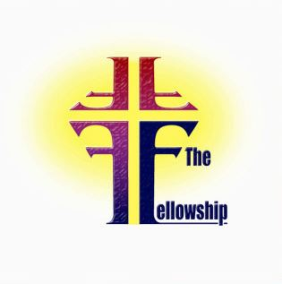

WELCOME

Sunday
9:15 a.m. Fellowship Breakfast
9:45 a.m. Prayer, Praise and Bible Study
10:50 a.m. Worship Service (also Live Streaming FB)
Wednesday
6:15 p.m. Fellowship Dinner (Last Wednesday each Month)
7:00 p.m. Bible Studies for all ages
8:00 p.m. Praise Team Rehearsal
We are Christian by faith and Southern Baptist by denomination. You become a Southern Baptist by uniting with a Southern Baptist church, one in friendly cooperation with the general Southern Baptist enterprise of reaching the world for Christ. Typically church membership is a matter of receiving Jesus as your Savior and Lord and experiencing believer's baptism by immersion. Southern Baptists have prepared a statement of generally held convictions called The Baptist Faith and Message. It serves as a guide to understanding who they are. Copies are available at Southern Baptist churches. The topics here provide only a brief, partial summary.
The Holy Bible was written by men divinely inspired and is God's revelation of Himself to man. It is a perfect treasure of divine instruction. It has God for its author, salvation for its end, and truth, without any mixture of error, for its matter. Therefore, all Scripture is totally true and trustworthy. It reveals the principles by which God judges us, and therefore is, and will remain to the end of the world the true center of Christian union, and the supreme standard by which all human conduct, creeds, and religious opinions should be tried. All Scripture is a testimony to Christ, who is Himself the focus of divine revelation.
There is one and only one living and true God. …The eternal triune God reveals Himself to us as Father, Son and Holy Spirit, with distinct personal attributes, but without division of nature, essence, or being.
God as Father reigns with providential care over His universe, His creatures, and the flow of the stream of human history according to the purposes of His grace. …God is Father in truth to those who become children of God through faith in Jesus Christ.
Christ is the eternal Son of God. In His incarnation as Jesus Christ, He was conceived of the Holy Spirit and born of the virgin Mary. …He honored the divine law by His personal obedience, and in His substitutionary death on the cross, He made provision for the redemption of men from sin.
The Holy Spirit is the Spirit of God, fully divine. …He exalts Christ. He convicts men of sin, of righteousness and of judgment. …He enlightens and empowers the believer and the church in worship, evangelism, and service.
Man is the special creation of God, in His own image. He created them male and female as the crowning work of His creation. …By his free choice man sinned against God and brought sin into the human race. … The sacredness of human personality is evident in that God created man in His own image, and in that Christ died for man; therefore every person of every race possesses dignity and is worthy of respect and Christian love.
Salvation involves the redemption of the whole man, and is offered freely to all who accept Jesus Christ as Lord and Saviour, who by His own blood obtained eternal redemption for the believer. In its broadest sense salvation includes regeneration, justification, sanctification, and glorification.
Election is the gracious purpose of God, according to which He regenerates, justifies, sanctifies, and glorifies sinners. …All true believers endure to the end. Those whom God has accepted in Christ, and sanctified by His Spirit will never fall away from the state of grace, but shall persevere to the end.
A New Testament church of the Lord Jesus Christ is an autonomous local congregation of baptized believers, associated by covenant in the faith and fellowship of the gospel, observing the two ordinances of Christ, governed by His laws, exercising the gifts, rights, and privileges invested in them by His Word, and seeking to extend the gospel to the ends of the earth. Each congregation operates under the Lordship of Christ through democratic processes. In such a congregation each member is responsible and accountable to Christ as Lord. Its scriptural officers are pastors and deacons. While both men and women are gifted for service in the church, the office of pastor is limited to men as qualified by Scripture.
Christian baptism is the immersion of a believer in water. …It is an act of obedience symbolizing the believer's faith in a crucified, buried, and risen Saviour, the believer's death to sin, the burial of the old life, and the resurrection to walk in newness of life in Christ Jesus.
The Lord's Supper is a symbolic act of obedience whereby members … memorialize the death of the Redeemer and anticipate His second coming.
It is the duty and privelege of every follower of Christ and every church of the Lord Jesus Christ to endeavor to make disciples of all nations... to seek constantly to win the lost to Christ by verbal witness undergirded by a Christian lifestyle, and by other methods in harmony with the gospel of Christ.
The first day of the week is the Lord's Day. …It commemorates the resurrection of Christ from the dead and should be employed in exercises of worship and spiritual devotion.
God, in His own time and in His own way, will bring the world to its appropriate end. …Jesus Christ will return personally and visibly …the dead will be raised; and Christ will judge all men in righteousness. The unrighteous will be consigned to Hell. …The righteous… will receive their reward and will dwell forever in Heaven with the Lord.
The cause of education in the Kingdom of Christ is co-ordinate with the causes of missions and general benevolence … there should be a proper balance between academic freedom and academic responsibility. …The freedom of a teacher in a Christian school, college, or seminary is limited by the pre-eminence of Jesus Christ, by the authoritative nature of the Scriptures, and by the distinct purpose for which the school exists.
God is the source of all blessings, temporal and spiritual; all that we have and are we owe to Him. Christians have a spiritual debtorship to the whole world, a holy trusteeship in the gospel, and a binding stewardship in their possessions. They are therefore under obligation to serve Him with their time, talents, and material possessions.
Christ's people should … organize such associations and conventions as may best secure cooperation for the great objects of the Kingdom of God. Such organizations have no authority over one another or over the churches. …Cooperation is desirable between the various Christian denominations.
Church and state should be separate. The state owes to every church protection and full freedom in the pursuit of its spiritual ends. …A free church in a free state is the Christian ideal.
God has ordained the family as the foundational institution of human society. It is composed of persons related to one another by marriage, blood or adoption. Marriage is the uniting of one man and one woman in covenant commitment for a lifetime. ... The husband and wife are of equal worth before God, since both are created in God's image. A husband is to love his wife as Christ loved the church. He has the God-given responsibility to provide for, to protect, and to lead his family. A wife is to submit herself graciously to the servant leadership of her husband even as the church willingly submits to the headship of Christ. She, being in the image of God as is her husband and thus equal to him, has the God-given responsibility to respect her husband and to serve as his helper in managing the household and nurturing the next generation... Children, from the moment of conception, are a blessing and heritage from the Lord. Parents are to demonstrate to their children God's pattern for marriage.